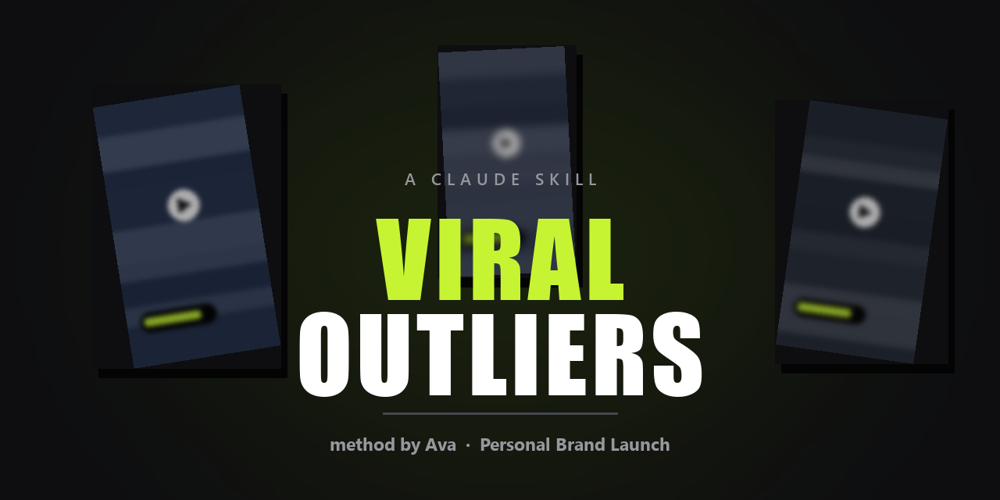

Find the reels that are actually working in your niche, and get back a script you can record today.
Ask Claude for research and it sweeps Instagram, keeps only the reels that genuinely
outperformed, downloads each one, watches it frame by frame,
transcribes the audio, and hands you a clean .md card: the literal
script, the formula behind it with the blanks exposed, your version of it, and the
caption.
Get it on GitHub Leer en español
Free and open source (MIT). Built on the research method taught by Ava Yuergens (@personalbrandlaunch) — all strategy credit is hers.
An outlier is a reel that did far better than the account that posted it should be able to do.
A 2-million-view reel from a 3-million-follower account is not impressive — that account reaches 2 million on a bad day. A 2-million-view reel from a 4,000-follower account is a different thing entirely. Nobody watched it because they knew the person. They watched it because the video itself worked.
So the skill keeps only reels that clear two bars:
BAR 1: at least 700,000 views below this it never really met a cold audience
BAR 2: at least 5x the followers below this the account carried it, not the videoyour brand profile + a fresh sweep of Instagram
↓
the reels that genuinely outperformed (the 5X rule)
↓
each one downloaded, watched in 6 frames, audio transcribed
↓
one .md card per reel: literal script · the formula with blanks ·
your version · the captionIt does not summarise the caption. It downloads the MP4, pulls frames, and runs the audio through Whisper — because the caption is not the script, and a reel with 8.9M views can turn out to be one sentence of speech over a silent demo.
git clone https://github.com/w-avw/instagram-viral-reels-research-claude-skill
cp -r instagram-viral-reels-research-claude-skill/skills/viral-outliers ~/.claude/skills/Then fill in references/brand-profile.md — your niche, your real numbers, the words
your customer actually uses, and the industry jargon your audience does not understand. That file is
what makes "your version" sound like you. Every time you rewrite a script it gave you, you log the
correction, and it stops making that mistake.
No Instagram API key, no scraping service, no paid tool. It reads through the Chrome session you are already logged into, and it is read-only — it never follows, likes, comments or posts.
This is one. It runs inside Claude Code, sweeps Instagram for reels that outperformed their account, and returns the script rather than a list of links.
Fill in the brand profile, then ask for research. It sweeps, filters by the 5X rule, watches and transcribes each survivor, and writes a card per reel.
Yes, but the point is what it writes from. It does not invent a script out of thin air — it takes a reel that provably worked, strips it to its formula, and refills the blanks with your business, your numbers and your words.
An AI asked for hooks invents plausible ones. This one only ever hands you structures that already worked on a cold audience, with the view counts attached and the audio transcribed to prove it.
Yes. Transcription auto-detects language, and scripts come out in whichever language your brand profile is written in.
Una skill de Claude Code para hacer research de reels virales de Instagram.
Le pides research y barre Instagram, se queda solo con los reels que de verdad rindieron por
encima de su cuenta, se descarga cada uno, lo ve fotograma a fotograma,
transcribe el audio, y te devuelve una ficha .md con el guion literal,
la fórmula con los huecos a la vista, tu versión, y la descripción del video.
Un reel que rindió muchísimo más de lo que su cuenta debería poder. Dos millones de vistas desde una cuenta de tres millones de seguidores no dice nada. Dos millones desde una cuenta de cuatro mil, sí — a ese nadie lo vio por conocer a la persona. Lo vieron porque el video funcionaba.
FILTRO 1: mínimo 700.000 vistas sin esto nunca salió a público frío
FILTRO 2: mínimo 5x sus seguidores sin esto lo cargó la cuenta, no el videoNo lee la descripción del video y escribe desde ahí. Baja el MP4, saca los fotogramas y pasa el audio por Whisper. Un reel de 8,9 millones de vistas puede resultar ser una sola frase hablada sobre una demo muda — y eso solo se sabe escuchándolo.
git clone https://github.com/w-avw/instagram-viral-reels-research-claude-skill
cp -r instagram-viral-reels-research-claude-skill/skills/viral-outliers ~/.claude/skills/Después rellena references/brand-profile.md con tu negocio, tus cifras reales,
las palabras que usa tu cliente y las que tu público no entiende. Eso es lo que
hace que "tu versión" suene a ti.
Solo lectura. Nunca sigue, da like, comenta ni publica. Entra con tu propia sesión de Chrome, sin API key ni servicios de pago.
Todo el método es de Ava Yuergens (@personalbrandlaunch) — la regla del 5X, los siete tipos de hook, las once estructuras de guion, la escalera de CTA. Este repo solo automatiza lo que ella enseña en abierto. Ve a aprender de ella directamente.